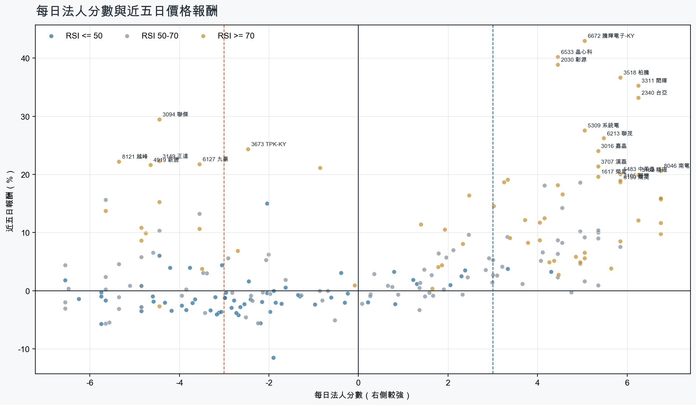
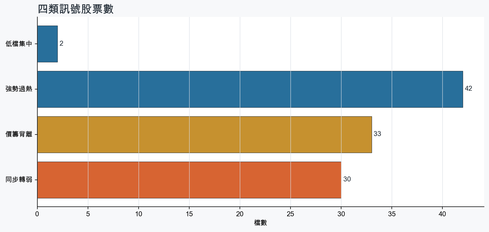
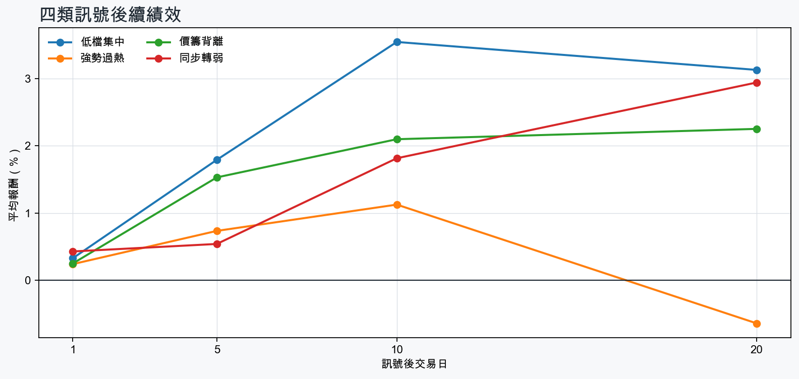

市場情緒偏多
近5日法人合計-1,583,880 張
篩選池上漲比例64.5%
籌碼好 / RSI低2 檔
籌碼差 / 價跌15 檔



EPS × PE VALUATION
法人常用的相對估值
顯示保守、基準與樂觀估值帶，不把單一數字包裝成精準目標價。
最新累計 EPS 依季數年化 × 同產業有效 P/E 的 Q25／中位數／Q75。排除本公司、非正 P/E，並以 1.5×IQR 排除離群值。估值帶是公開資料篩選值，不是法人目標價；未使用分析師預估 EPS。
MOOD × MONEY
情緒與籌碼雷達
熱度代表被討論程度；情緒分與法人方向分開計算。熱門不等於適合追價，樣本不足也不硬判多空。
| 股票 | 情緒 | 討論熱度 | 情緒 × 籌碼 | 情緒 × 基本面 |
|---|---|---|---|---|
| 2409 友達強勢過熱 | 偏多 +23.6信心 100 | 10010 篇 / 518 留言 / 3 則新聞 | 情籌共振法人分 +4.6 | 基本面與情緒分歧基本面分 -0.8 |
| 8299 群聯同步轉弱 | 中性分歧 +13.4信心 100 | 822 篇 / 165 留言 / 3 則新聞 | 高熱分歧法人分 -5.6 | 基本面與情緒分歧基本面分 +3.6 |
| 2368 金像電同步轉弱 | 情緒高漲 +52.3信心 85 | 701 篇 / 72 留言 / 3 則新聞 | 熱門但法人撤退法人分 -6.5 | 基本面與情緒共振基本面分 +3.6 |
| 2344 華邦電低檔集中 | 偏多 +26.2信心 79 | 691 篇 / 66 留言 / 3 則新聞 | 情籌共振法人分 +3.3 | 基本面與情緒共振基本面分 +3.6 |
| 2324 仁寶同步轉弱 | 偏多 +34.5信心 63 | 591 篇 / 27 留言 / 3 則新聞 | 熱門但法人撤退法人分 -5.7 | 基本面與情緒共振基本面分 +3.0 |
| 8210 勤誠同步轉弱 | 中性分歧 +0.0信心 30 | 360 篇 / 0 留言 / 3 則新聞 | 情籌混合法人分 -5.8 | 基本面與情緒分歧基本面分 +3.6 |
| 3260 威剛同步轉弱 | 偏多 +29.7信心 30 | 360 篇 / 0 留言 / 3 則新聞 | 熱門但法人撤退法人分 -5.8 | 基本面與情緒共振基本面分 +3.6 |
| 6669 緯穎同步轉弱 | 偏多 +29.7信心 30 | 360 篇 / 0 留言 / 3 則新聞 | 熱門但法人撤退法人分 -5.8 | 基本面與情緒共振基本面分 +3.0 |
| 3324 雙鴻同步轉弱 | 偏多 +29.7信心 30 | 360 篇 / 0 留言 / 3 則新聞 | 熱門但法人撤退法人分 -5.7 | 基本面與情緒共振基本面分 +3.6 |
| 2356 英業達同步轉弱 | 中性分歧 +0.0信心 30 | 360 篇 / 0 留言 / 3 則新聞 | 情籌混合法人分 -3.9 | 基本面與情緒分歧基本面分 +3.0 |
| 2201 裕隆同步轉弱 | 偏多 +29.7信心 30 | 360 篇 / 0 留言 / 3 則新聞 | 熱門但法人撤退法人分 -4.3 | 基本面與情緒分歧基本面分 +0.4 |
| 4919 新唐價籌背離 | 中性分歧 +0.0信心 30 | 360 篇 / 0 留言 / 3 則新聞 | 情籌混合法人分 -4.7 | 基本面與情緒分歧基本面分 -0.8 |
01
籌碼好 / RSI低
優先研究基本面；法人續買且價格止穩時，才適合分批觀察。
| 股票 / 確認狀態 | 每日法人分 | 浦男式近似 | 法人加速度 | RSI / 相對強弱 | 量價確認 | 融資融券 | 每週集保確認 | 基本面 | EPS × 同業 P/E 估值 | 情緒 / 情籌 | 近期消息 | 論壇討論 |
|---|---|---|---|---|---|---|---|---|---|---|---|---|
| 2344 華邦電可研究 · 79 分籌碼與價格確認，可列研究清單 | +3.3法人 +37,508 張 / 3 天 | 接近 · 80站上月線；中期均線偏多；法人籌碼偏多；留意明顯弱於大盤、量能尚未確認 | +54,380 張近3日 +49,432 / 連續 -1 日 | 49.6相對大盤 -5.0% | 量比 0.76確認分 +2.5近20日弱於大盤 | -%融資 - 張 / 融券 - 張 | -2.89 pp1000張 -3.48 pp | 單月營收年增 +289.4%；累計營收年增 +177.4%；2026 Q2 累計 EPS 7.65仍需觀察下一期財報延續性來源：公開資訊觀測站 | 基準 NT$ 436.7估值帶 286.7–789.3現價 179.0 · 低於估值帶 · 距基準 +143.9%2026 Q2 累計 EPS 7.65 → 年化 15.30半導體同業 P/E 18.74／28.54／51.59 · n=149 · 信心中等以 Q2 累計 EPS 年化，不等同分析師全年預估來源：TWSE／TPEx 每日本益比 | 偏多 +26.2熱度 69 / 信心 79情籌共振 | 2344 華邦電- 股市最新爆料，掌握股友們對眾個股股價、技術分析、新聞的第一手... - 股市爆料同學會CMoney · 10/02記憶體最猛的還在後面？法人估NAND、DRAM Q4還要漲！群聯、南亞科、華邦電受惠財訊 · 10/02 | [新聞] 華邦電併購外商效應 法人上看245元PTT Stock · 10-02 · 66 留言 |
| 6269 台郡等待確認 · 62 分先等基本面止穩 | +4.3法人 +2,391 張 / 4 天 | 接近 · 60站上月線；中期均線偏多；法人籌碼偏多；留意明顯弱於大盤、量能異常 | +488 張近3日 +1,447 / 連續 +1 日 | 48.1相對大盤 -12.8% | 量比 0.60確認分 +1.0近20日弱於大盤；成交量不足 | -%融資 - 張 / 融券 - 張 | -3.93 pp1000張 -3.45 pp | 單月營收年增 +1.3%；累計營收年增 +1.9%2026 Q2 累計 EPS -4.27；2026 Q2 累計營益率 -15.7%來源：公開資訊觀測站 | 不適用年化 EPS 非正數，不適合使用本益比估值 | 樣本不足 +0.0熱度 0 / 信心 0情緒樣本不足 | 近期沒有通過股票語境篩選的新聞 | 近期沒有明確提及本股的論壇樣本 |
02
籌碼好 / RSI高
趨勢強但不追價，等待量縮、RSI降溫或回測支撐。
| 股票 / 確認狀態 | 每日法人分 | 浦男式近似 | 法人加速度 | RSI / 相對強弱 | 量價確認 | 融資融券 | 每週集保確認 | 基本面 | EPS × 同業 P/E 估值 | 情緒 / 情籌 | 近期消息 | 論壇討論 |
|---|---|---|---|---|---|---|---|---|---|---|---|---|
| 8150 南茂等待拉回 · 100 分等拉回，不追價 | +5.8法人 +23,631 張 / 4 天 | 命中 · 96站上月線；中期均線偏多；法人籌碼偏多；留意動能位置非最佳 | +30,199 張近3日 +31,048 / 連續 +3 日 | 77.8相對大盤 +35.8% | 量比 2.15確認分 +6.5價格、量能與籌碼未見明顯弱項 | -%融資 - 張 / 融券 - 張 | +7.51 pp1000張 +7.44 pp | 單月營收年增 +33.3%；累計營收年增 +30.0%；2026 Q2 累計 EPS 2.00仍需觀察下一期財報延續性來源：公開資訊觀測站 | 基準 NT$ 112.6估值帶 74.96–206.4現價 127.0 · 估值帶內 · 距基準 -11.4%2026 Q2 累計 EPS 2.00 → 年化 4.00半導體同業 P/E 18.74／28.14／51.59 · n=149 · 信心中等以 Q2 累計 EPS 年化，不等同分析師全年預估來源：TWSE／TPEx 每日本益比 | 樣本不足 +0.0熱度 22 / 信心 10情緒樣本不足 | 8150 南茂 - 多空區118-119 - 股市爆料同學會CMoney · 10/02 | 近期沒有明確提及本股的論壇樣本 |
| 8021 尖點等待拉回 · 100 分等拉回，不追價 | +6.8法人 +4,041 張 / 5 天 | 接近 · 90站上月線；中期均線偏多；法人籌碼偏多；留意RSI過熱 | +2,765 張近3日 +3,722 / 連續 +8 日 | 82.7相對大盤 +15.5% | 量比 1.57確認分 +6.5價格、量能與籌碼未見明顯弱項 | -%融資 - 張 / 融券 - 張 | +3.02 pp1000張 +4.03 pp | 單月營收年增 +97.8%；累計營收年增 +76.1%；2026 Q2 累計 EPS 3.25仍需觀察下一期財報延續性來源：公開資訊觀測站 | 基準 NT$ 147.8估值帶 101.5–249.8現價 553.0 · 高於估值帶 · 距基準 -73.3%2026 Q2 累計 EPS 3.25 → 年化 6.50其他電子同業 P/E 15.61／22.73／38.43 · n=69 · 信心中等以 Q2 累計 EPS 年化，不等同分析師全年預估來源：TWSE／TPEx 每日本益比 | 偏多 +19.8熱度 30 / 信心 20情籌混合 | PCB全面點火！ 臻鼎、尖點飆漲停 「載板三雄」齊創高Yahoo股市 · 10/028021 尖點- 果然是欠罵⋯⋯⋯禮拜一突破一下前高吧！我笑你不敢啦⋯⋯主力沒... - 股市爆料同學會CMoney · 10/02 | 近期沒有明確提及本股的論壇樣本 |
| 3105 穩懋等待拉回 · 100 分等拉回，不追價 | +5.8法人 +23,899 張 / 4 天 | 命中 · 96站上月線；中期均線偏多；法人籌碼偏多；留意動能位置非最佳 | +25,041 張近3日 +22,381 / 連續 +3 日 | 77.7相對大盤 +20.9% | 量比 1.04確認分 +6.5價格、量能與籌碼未見明顯弱項 | +0.1%融資 +45 張 / 融券 -35 張 | +2.18 pp1000張 +2.44 pp | 單月營收年增 +30.6%；累計營收年增 +33.0%；2026 Q2 累計 EPS 3.56仍需觀察下一期財報延續性來源：公開資訊觀測站 | 基準 NT$ 199.9估值帶 133.2–360.8現價 591.0 · 高於估值帶 · 距基準 -66.2%2026 Q2 累計 EPS 3.56 → 年化 7.12半導體同業 P/E 18.71／28.07／50.68 · n=148 · 信心中等以 Q2 累計 EPS 年化，不等同分析師全年預估來源：TWSE／TPEx 每日本益比 | 偏多 +29.7熱度 36 / 信心 30情籌共振 | 低軌衛星起飛！「這檔」連拉3根同穩懋漲停 騰輝連3漲31%創高、台燿一度亮燈Yahoo股市 · 10/02美國擬卡中國3.2T！聯亞、穩懋、IET…光通訊5檔漲停誰有機會吃到轉單？ - 上市櫃旺得富理財網 · 10/02 | 近期沒有明確提及本股的論壇樣本 |
| 6168 宏齊等待拉回 · 100 分等拉回，不追價 | +6.8法人 +4,426 張 / 5 天 | 接近 · 76站上月線；中期均線偏多；法人籌碼偏多；留意量能異常、RSI過熱 | +3,167 張近3日 +2,132 / 連續 +5 日 | 81.3相對大盤 +61.4% | 量比 0.31確認分 +5.2成交量不足 | -%融資 - 張 / 融券 - 張 | +8.66 pp1000張 +9.43 pp | 單月營收年增 +18.5%；累計營收年增 +9.3%；2026 Q2 累計 EPS 0.172026 Q2 累計營益率 -0.4%來源：公開資訊觀測站 | 基準 NT$ 8.77估值帶 4.65–13.06現價 46.00 · 高於估值帶 · 距基準 -80.9%2026 Q2 累計 EPS 0.17 → 年化 0.34光電同業 P/E 13.68／25.79／38.41 · n=69 · 信心中等以 Q2 累計 EPS 年化，不等同分析師全年預估來源：TWSE／TPEx 每日本益比 | 樣本不足 +0.0熱度 0 / 信心 0情緒樣本不足 | 近期沒有通過股票語境篩選的新聞 | 近期沒有明確提及本股的論壇樣本 |
| 3293 鈊象等待拉回 · 100 分等拉回，不追價 | +5.8法人 +9,582 張 / 4 天 | 接近 · 86站上月線；法人籌碼偏多；法人買盤加速；留意中期均線未翻多、動能位置非最佳 | +477 張近3日 +5,177 / 連續 -1 日 | 75.4相對大盤 +6.7% | 量比 1.63確認分 +6.820日線低於60日線 | -3.6%融資 -81 張 / 融券 +8 張 | +1.13 pp1000張 +0.82 pp | 單月營收年增 +24.8%；累計營收年增 +18.1%；2026 Q2 累計 EPS 22.77仍需觀察下一期財報延續性來源：公開資訊觀測站 | 基準 NT$ 646.2估值帶 504.1–1,427現價 791.0 · 估值帶內 · 距基準 -18.3%2026 Q2 累計 EPS 22.77 → 年化 45.54文化創意同業 P/E 11.07／14.19／31.34 · n=14 · 信心中等以 Q2 累計 EPS 年化，不等同分析師全年預估來源：TWSE／TPEx 每日本益比 | 樣本不足 +0.0熱度 0 / 信心 0情緒樣本不足 | 近期沒有通過股票語境篩選的新聞 | 近期沒有明確提及本股的論壇樣本 |
| 3162 精確等待拉回 · 100 分等拉回，不追價 | +6.2法人 +4,483 張 / 5 天 | 命中 · 96站上月線；中期均線偏多；法人籌碼偏多；留意動能位置非最佳 | +2,478 張近3日 +3,503 / 連續 +6 日 | 74.9相對大盤 +20.8% | 量比 1.85確認分 +7.1價格、量能與籌碼未見明顯弱項 | -3.1%融資 -206 張 / 融券 +7 張 | -0.25 pp1000張 +0.44 pp | 單月營收年增 +101.2%；累計營收年增 +33.4%；2026 Q2 累計 EPS 0.052026 Q2 累計營益率 0.6%來源：公開資訊觀測站 | 不適用年化 EPS 與交易所近四季 EPS 差異過大，可能有股本調整或一次性損益 | 樣本不足 +0.0熱度 0 / 信心 0情緒樣本不足 | 近期沒有通過股票語境篩選的新聞 | 近期沒有明確提及本股的論壇樣本 |
| 6438 迅得等待拉回 · 100 分等拉回，不追價 | +6.8法人 +1,953 張 / 5 天 | 接近 · 81站上月線；中期均線偏多；法人籌碼偏多；留意量能異常、動能位置非最佳 | +685 張近3日 +1,308 / 連續 +5 日 | 75.0相對大盤 +0.3% | 量比 3.11確認分 +3.4價格、量能與籌碼未見明顯弱項 | -%融資 - 張 / 融券 - 張 | +1.14 pp1000張 +0.00 pp | 單月營收年增 +15.5%；累計營收年增 +11.5%；2026 Q2 累計 EPS 3.79仍需觀察下一期財報延續性來源：公開資訊觀測站 | 基準 NT$ 172.3估值帶 118.3–293.4現價 168.0 · 估值帶內 · 距基準 +2.6%2026 Q2 累計 EPS 3.79 → 年化 7.58其他電子同業 P/E 15.61／22.73／38.70 · n=69 · 信心中等以 Q2 累計 EPS 年化，不等同分析師全年預估來源：TWSE／TPEx 每日本益比 | 樣本不足 +9.9熱度 22 / 信心 10情緒樣本不足 | 迅得9月/Q3營收創高；Q4動能有望延續- 新聞MoneyDJ · 10/02 | 近期沒有明確提及本股的論壇樣本 |
| 5483 中美晶等待拉回 · 100 分等拉回，不追價 | +5.8法人 +19,944 張 / 4 天 | 接近 · 80站上月線；法人籌碼偏多；法人買盤加速；留意中期均線未翻多、RSI過熱 | +28,652 張近3日 +13,501 / 連續 +1 日 | 78.1相對大盤 +18.7% | 量比 2.46確認分 +6.520日線低於60日線 | +2.4%融資 +404 張 / 融券 -24 張 | +0.69 pp1000張 +1.16 pp | 單月營收年增 +11.7%；累計營收年增 +6.1%；2026 Q2 累計 EPS 5.02仍需觀察下一期財報延續性來源：公開資訊觀測站 | 基準 NT$ 286.5估值帶 188.2–518.0現價 221.5 · 估值帶內 · 距基準 +29.4%2026 Q2 累計 EPS 5.02 → 年化 10.04半導體同業 P/E 18.74／28.54／51.59 · n=149 · 信心中等以 Q2 累計 EPS 年化，不等同分析師全年預估來源：TWSE／TPEx 每日本益比 | 樣本不足 +0.0熱度 0 / 信心 0情緒樣本不足 | 近期沒有通過股票語境篩選的新聞 | 近期沒有明確提及本股的論壇樣本 |
| 6278 台表科等待拉回 · 100 分等拉回，不追價 | +5.6法人 +2,700 張 / 5 天 | 命中 · 96站上月線；中期均線偏多；法人籌碼偏多；留意動能位置非最佳 | +3,988 張近3日 +2,472 / 連續 +5 日 | 70.4相對大盤 +3.8% | 量比 1.20確認分 +5.4價格、量能與籌碼未見明顯弱項 | -%融資 - 張 / 融券 - 張 | +1.58 pp1000張 +2.31 pp | 單月營收年增 +10.9%；累計營收年增 +5.2%；2026 Q2 累計 EPS 4.932026 Q2 累計營益率 6.0%來源：公開資訊觀測站 | 基準 NT$ 255.3估值帶 134.0–385.7現價 217.0 · 估值帶內 · 距基準 +17.6%2026 Q2 累計 EPS 4.93 → 年化 9.86光電同業 P/E 13.59／25.89／39.12 · n=68 · 信心中等以 Q2 累計 EPS 年化，不等同分析師全年預估來源：TWSE／TPEx 每日本益比 | 樣本不足 +0.0熱度 0 / 信心 0情緒樣本不足 | 近期沒有通過股票語境篩選的新聞 | 近期沒有明確提及本股的論壇樣本 |
| 6672 騰輝電子-KY等待拉回 · 100 分等拉回，不追價 | +5.0法人 +7,606 張 / 4 天 | 接近 · 90站上月線；中期均線偏多；法人籌碼偏多；留意RSI過熱 | +2,702 張近3日 +5,613 / 連續 +3 日 | 84.7相對大盤 +56.4% | 量比 2.21確認分 +6.5價格、量能與籌碼未見明顯弱項 | -%融資 - 張 / 融券 - 張 | +2.52 pp1000張 -0.45 pp | 單月營收年增 +133.2%；累計營收年增 +53.6%；2026 Q2 累計 EPS 4.75仍需觀察下一期財報延續性來源：公開資訊觀測站 | 基準 NT$ 256.8估值帶 178.1–435.9現價 439.0 · 高於估值帶 · 距基準 -41.5%2026 Q2 累計 EPS 4.75 → 年化 9.50電子零組件同業 P/E 18.75／27.03／45.88 · n=150 · 信心中等以 Q2 累計 EPS 年化，不等同分析師全年預估來源：TWSE／TPEx 每日本益比 | 偏多 +29.7熱度 36 / 信心 30情籌共振 | 騰輝電子-KY股價刷新高 8月獲利提前開獎「年增 568%」ETtoday財經雲 · 10/02股價2個月狂噴一倍！騰輝電子-KY做什麼的，為何股價創新高？8月獲利暴增568％，15億擴產搶什麼| 下班經濟學| 財經Storm.mg · 10/02 | 近期沒有明確提及本股的論壇樣本 |
| 6122 擎邦等待拉回 · 100 分等拉回，不追價 | +6.8法人 +2,695 張 / 5 天 | 接近 · 90站上月線；中期均線偏多；法人籌碼偏多；留意RSI過熱 | +802 張近3日 +1,774 / 連續 +10 日 | 96.6相對大盤 +26.2% | 量比 2.11確認分 +5.9融資單日增幅偏高 | +11.5%融資 +167 張 / 融券 +11 張 | +4.59 pp1000張 +0.91 pp | 單月營收年增 +13.6%；2026 Q2 累計 EPS 2.19；2026 Q2 累計營益率 10.9%累計營收年增 -0.2%來源：公開資訊觀測站 | 基準 NT$ 90.18估值帶 60.71–136.0現價 63.90 · 估值帶內 · 距基準 +41.1%2026 Q2 累計 EPS 2.19 → 年化 4.38電機機械同業 P/E 13.86／20.59／31.05 · n=70 · 信心中等以 Q2 累計 EPS 年化，不等同分析師全年預估來源：TWSE／TPEx 每日本益比 | 樣本不足 +0.0熱度 0 / 信心 0情緒樣本不足 | 近期沒有通過股票語境篩選的新聞 | 近期沒有明確提及本股的論壇樣本 |
| 2409 友達等待拉回 · 100 分等拉回，不追價 | +4.6法人 +68,087 張 / 3 天 | 接近 · 81站上月線；中期均線偏多；法人籌碼偏多；留意基本面偏弱、動能位置非最佳 | +339,941 張近3日 +122,945 / 連續 +1 日 | 71.8相對大盤 +48.2% | 量比 1.28確認分 +6.5價格、量能與籌碼未見明顯弱項 | -%融資 - 張 / 融券 - 張 | +9.52 pp1000張 +9.86 pp | 2026 Q2 累計 EPS 0.03單月營收年增 -5.9%；累計營收年增 -1.8%；2026 Q2 累計營益率 -0.3%來源：公開資訊觀測站 | 基準 NT$ 1.55估值帶 0.82–2.30現價 40.45 · 高於估值帶 · 距基準 -96.2%2026 Q2 累計 EPS 0.03 → 年化 0.06光電同業 P/E 13.68／25.79／38.41 · n=69 · 信心較低以 Q2 累計 EPS 年化，不等同分析師全年預估；年化 EPS 為交易所近四季 EPS 的 0.25 倍，需保守解讀來源：TWSE／TPEx 每日本益比 | 偏多 +23.6熱度 100 / 信心 100情籌共振 | 【Hot台股】友達衝破40元寫近16年新高！網嗨「死抱友達人生發達」 分析師勸：別輕易追高Yahoo股市 · 10/02友達本業低迷…股價飆上16年新高！能追上群創？沈萬鈞揭雙虎「重置價值」 示警漲到這一步恐成波段高點- 上市櫃旺得富理財網 · 10/02 | [標的] 群創3481 友達2409PTT Stock · 10-02 · 86 留言[新聞] 輝達喊玻璃基板動作快 友達、群創等台PTT Stock · 09-30 · 81 留言 |
| 3016 嘉晶等待拉回 · 94 分等拉回，不追價 | +5.3法人 +10,860 張 / 4 天 | 接近 · 73站上月線；中期均線偏多；法人籌碼偏多；留意法人買盤未加速、量能異常 | -17,618 張近3日 -240 / 連續 +2 日 | 91.2相對大盤 +75.5% | 量比 0.42確認分 +1.1成交量不足；法人買盤減速 | -%融資 - 張 / 融券 - 張 | +4.65 pp1000張 +4.44 pp | 單月營收年增 +57.8%；累計營收年增 +34.7%；2026 Q2 累計 EPS 1.00仍需觀察下一期財報延續性來源：公開資訊觀測站 | 基準 NT$ 56.28估值帶 37.48–101.6現價 180.5 · 高於估值帶 · 距基準 -68.8%2026 Q2 累計 EPS 1.00 → 年化 2.00半導體同業 P/E 18.74／28.14／50.81 · n=149 · 信心中等以 Q2 累計 EPS 年化，不等同分析師全年預估來源：TWSE／TPEx 每日本益比 | 偏多 +29.7熱度 36 / 信心 30情籌共振 | 矽晶圓漲價！環球晶領頭鎖漲停 嘉晶刷新高ETtoday財經雲 · 10/02〈焦點股〉矽晶圓漲價題材發酵 漢磊亮燈漲停、嘉晶寫新天價news.cnyes.com · 10/02 | 近期沒有明確提及本股的論壇樣本 |
| 1708 東鹼等待拉回 · 100 分等拉回，不追價 | +3.7法人 +2,220 張 / 3 天 | 接近 · 76站上月線；法人籌碼偏多；法人買盤加速；留意中期均線未翻多、量能異常 | +1,711 張近3日 +2,035 / 連續 +1 日 | 76.8相對大盤 +6.1% | 量比 3.48確認分 +4.920日線低於60日線 | -%融資 - 張 / 融券 - 張 | +0.60 pp1000張 +1.43 pp | 單月營收年增 +33.2%；累計營收年增 +16.0%；2026 Q2 累計 EPS 1.98仍需觀察下一期財報延續性來源：公開資訊觀測站 | 基準 NT$ 77.89估值帶 56.07–107.8現價 56.20 · 估值帶內 · 距基準 +38.6%2026 Q2 累計 EPS 1.98 → 年化 3.96化學工業同業 P/E 14.16／19.67／27.21 · n=32 · 信心中等以 Q2 累計 EPS 年化，不等同分析師全年預估來源：TWSE／TPEx 每日本益比 | 樣本不足 +0.0熱度 0 / 信心 0情緒樣本不足 | 近期沒有通過股票語境篩選的新聞 | 近期沒有明確提及本股的論壇樣本 |
| 5425 台半等待拉回 · 100 分等拉回，不追價 | +5.0法人 +5,829 張 / 4 天 | 命中 · 96站上月線；中期均線偏多；法人籌碼偏多；留意動能位置非最佳 | +6,395 張近3日 +5,438 / 連續 +4 日 | 73.3相對大盤 +5.3% | 量比 1.92確認分 +6.4價格、量能與籌碼未見明顯弱項 | -2.5%融資 -311 張 / 融券 +9 張 | -1.26 pp1000張 -0.69 pp | 單月營收年增 +22.4%；累計營收年增 +7.5%；2026 Q2 累計 EPS 1.52仍需觀察下一期財報延續性來源：公開資訊觀測站 | 基準 NT$ 85.55估值帶 56.97–156.8現價 102.0 · 估值帶內 · 距基準 -16.1%2026 Q2 累計 EPS 1.52 → 年化 3.04半導體同業 P/E 18.74／28.14／51.59 · n=149 · 信心中等以 Q2 累計 EPS 年化，不等同分析師全年預估來源：TWSE／TPEx 每日本益比 | 偏多 +29.7熱度 36 / 信心 30情籌共振 | 功率半導體紅光滿面！「這檔」亮燈漲停、連9日大漲37% 嘉晶8月獲利增73倍漲7%、茂矽、台半漲逾3%Yahoo股市 · 10/025425 台半 - 今日上櫃外資買超第12名！！ 資料來源：https://je... - 股市爆料同學會CMoney · 10/02 | 近期沒有明確提及本股的論壇樣本 |
03
籌碼差 / 股價上漲
可能是事件行情或軋空；沒有籌碼改善前避免追高。
| 股票 / 確認狀態 | 每日法人分 | 浦男式近似 | 法人加速度 | RSI / 相對強弱 | 量價確認 | 融資融券 | 每週集保確認 | 基本面 | EPS × 同業 P/E 估值 | 情緒 / 情籌 | 近期消息 | 論壇討論 |
|---|---|---|---|---|---|---|---|---|---|---|---|---|
| 3094 聯傑風險警示 · 82 分背離警戒，避免追高 | -4.5法人 -3,695 張 / 2 天 | 接近 · 72站上月線；中期均線偏多；法人買盤加速；留意法人籌碼偏弱、買超延續不足 | +1,870 張近3日 -971 / 連續 -1 日 | 83.6相對大盤 +65.6% | 量比 2.32確認分 +6.5價格、量能與籌碼未見明顯弱項 | -%融資 - 張 / 融券 - 張 | +13.87 pp1000張 +11.88 pp | 單月營收年增 +30.2%；累計營收年增 +17.1%；2026 Q2 累計 EPS 0.39仍需觀察下一期財報延續性來源：公開資訊觀測站 | 基準 NT$ 21.89估值帶 14.59–39.53現價 70.30 · 高於估值帶 · 距基準 -68.9%2026 Q2 累計 EPS 0.39 → 年化 0.78半導體同業 P/E 18.71／28.07／50.68 · n=148 · 信心中等以 Q2 累計 EPS 年化，不等同分析師全年預估來源：TWSE／TPEx 每日本益比 | 樣本不足 +0.0熱度 22 / 信心 10情緒樣本不足 | 【12:18 即時新聞】聯傑(3094)股價走強，盤中買盤延續成焦點CMoney投資網誌 · 10/02 | 近期沒有明確提及本股的論壇樣本 |
| 8121 越峰風險警示 · 58 分背離警戒，避免追高 | -5.3法人 -2,325 張 / 1 天 | 未命中 · 49站上月線；法人買盤加速；明顯強於大盤；留意中期均線未翻多、法人籌碼偏弱 | +662 張近3日 -853 / 連續 -4 日 | 77.8相對大盤 +19.0% | 量比 3.27確認分 +5.320日線低於60日線；流動性偏低 | -%融資 +0 張 / 融券 +0 張 | -0.14 pp1000張 -0.14 pp | 單月營收年增 +25.8%；累計營收年增 +22.6%2026 Q2 累計 EPS 0.00；2026 Q2 累計營益率 1.1%來源：公開資訊觀測站 | 不適用年化 EPS 非正數，不適合使用本益比估值 | 樣本不足 +0.0熱度 22 / 信心 10情緒樣本不足 | 8121 越峰- 神仙打架！ - 股市爆料同學會CMoney · 10/02 | 近期沒有明確提及本股的論壇樣本 |
| 3149 正達風險警示 · 39 分背離警戒，避免追高 | -4.5法人 -4,077 張 / 2 天 | 未命中 · 35站上月線；明顯強於大盤；流動性足夠；留意中期均線未翻多、法人籌碼偏弱 | -6,333 張近3日 -5,479 / 連續 -3 日 | 81.2相對大盤 +16.9% | 量比 2.90確認分 +1.820日線低於60日線；法人買盤減速 | -%融資 - 張 / 融券 - 張 | -1.36 pp1000張 -0.97 pp | 單月營收年增 +19.3%；累計營收年增 +13.1%2026 Q2 累計 EPS -0.85；2026 Q2 累計營益率 -17.5%來源：公開資訊觀測站 | 不適用年化 EPS 非正數，不適合使用本益比估值 | 樣本不足 +0.0熱度 0 / 信心 0情緒樣本不足 | 近期沒有通過股票語境篩選的新聞 | 近期沒有明確提及本股的論壇樣本 |
| 4919 新唐風險警示 · 54 分背離警戒，避免追高 | -4.7法人 -4,413 張 / 2 天 | 未命中 · 37站上月線；法人買盤加速；明顯強於大盤；留意中期均線未翻多、法人籌碼偏弱 | +7,826 張近3日 -1,412 / 連續 -1 日 | 86.6相對大盤 +30.3% | 量比 4.72確認分 +5.320日線低於60日線 | -%融資 - 張 / 融券 - 張 | -0.91 pp1000張 -1.04 pp | 單月營收年增 +12.1%；累計營收年增 +1.0%2026 Q2 累計 EPS -0.57；2026 Q2 累計營益率 -2.8%來源：公開資訊觀測站 | 不適用年化 EPS 非正數，不適合使用本益比估值 | 中性分歧 +0.0熱度 36 / 信心 30情籌混合 | 4919 新唐- 我的庫存差你沒亮燈ㄌ喔~ 其他都都亮了🤣 - 股市爆料同學會CMoney · 10/02【12:07 即時新聞】新唐(4919) 股價勁揚逾8% 成IC設計盤中焦點CMoney投資網誌 · 10/02 | 近期沒有明確提及本股的論壇樣本 |
| 6127 九豪風險警示 · 35 分背離警戒，避免追高 | -3.5法人 -2,567 張 / 3 天 | 未命中 · 35站上月線；買超具延續性；明顯強於大盤；留意中期均線未翻多、法人籌碼偏弱 | -5,423 張近3日 -3,975 / 連續 -1 日 | 78.1相對大盤 +15.2% | 量比 6.27確認分 +0.820日線低於60日線；法人買盤減速；融資單日增幅偏高 | +5.8%融資 +277 張 / 融券 +75 張 | -1.30 pp1000張 -1.51 pp | 單月營收年增 +29.7%；累計營收年增 +5.5%2026 Q2 累計 EPS -1.10；2026 Q2 累計營益率 -23.3%來源：公開資訊觀測站 | 不適用年化 EPS 非正數，不適合使用本益比估值 | 偏多 +29.7熱度 36 / 信心 30熱門但法人撤退 | 熱門股／被動元件回神！九豪、光頡等6檔飆漲停國巨重返6字頭| 產經非凡新聞台 · 10/02台股迎光輝10月指數創高還有便宜貨？老手揭「1族群」主力洗盤3個月國巨、信昌電、九豪...9檔低基期轉機股1表看- 上市櫃旺得富理財網 · 10/02 | 近期沒有明確提及本股的論壇樣本 |
| 8039 台虹風險警示 · 7 分背離警戒，避免追高 | -5.7法人 -4,669 張 / 1 天 | 未命中 · 40站上月線；中期均線偏多；動能強但未過熱；留意法人籌碼偏弱、法人買盤未加速 | -2,826 張近3日 -3,602 / 連續 -2 日 | 58.5相對大盤 -10.6% | 量比 0.88確認分 -2.2近20日弱於大盤；法人買盤減速 | -%融資 - 張 / 融券 - 張 | -12.43 pp1000張 -12.94 pp | 2026 Q2 累計 EPS 1.56單月營收年增 -13.8%；累計營收年增 -0.9%；2026 Q2 累計營益率 6.2%來源：公開資訊觀測站 | 基準 NT$ 84.33估值帶 58.50–143.2現價 296.0 · 高於估值帶 · 距基準 -71.5%2026 Q2 累計 EPS 1.56 → 年化 3.12電子零組件同業 P/E 18.75／27.03／45.88 · n=150 · 信心中等以 Q2 累計 EPS 年化，不等同分析師全年預估來源：TWSE／TPEx 每日本益比 | 中性分歧 +0.0熱度 36 / 信心 30情籌混合 | 8039 台虹 - 突然衝了起來🤔 - 股市爆料同學會CMoney · 10/028月營收續達8億元以上 法人看好台虹明年EPS年增率可達55%以上理財周刊 · 09/30 | 近期沒有明確提及本股的論壇樣本 |
| 4551 智伸科風險警示 · 43 分背離警戒，避免追高 | -5.7法人 -1,732 張 / 1 天 | 未命中 · 56站上月線；明顯強於大盤；基本面有支撐；留意中期均線未翻多、法人籌碼偏弱 | -2,602 張近3日 -2,194 / 連續 -3 日 | 73.7相對大盤 +7.0% | 量比 2.61確認分 +1.520日線低於60日線；法人買盤減速 | -%融資 - 張 / 融券 - 張 | +0.31 pp1000張 -0.85 pp | 單月營收年增 +33.5%；累計營收年增 +21.1%；2026 Q2 累計 EPS 4.77仍需觀察下一期財報延續性來源：公開資訊觀測站 | 基準 NT$ 131.8估值帶 109.2–171.0現價 186.0 · 高於估值帶 · 距基準 -29.2%2026 Q2 累計 EPS 4.77 → 年化 9.54汽車工業同業 P/E 11.45／13.81／17.92 · n=27 · 信心中等以 Q2 累計 EPS 年化，不等同分析師全年預估來源：TWSE／TPEx 每日本益比 | 偏多 +29.7熱度 36 / 信心 30熱門但法人撤退 | 【12:51 即時新聞】智伸科(4551)走強逾5% 聚焦汽車精密零組件成長動能CMoney投資網誌 · 10/02智伸科(4551)下半年營運轉強 AI水冷、半導體雙引擎點火news.cnyes.com · 10/01 | 近期沒有明確提及本股的論壇樣本 |
| 1809 中釉風險警示 · 67 分背離警戒，避免追高 | -4.5法人 -2,789 張 / 2 天 | 接近 · 70站上月線；中期均線偏多；法人買盤加速；留意法人籌碼偏弱、買超延續不足 | +2,563 張近3日 -600 / 連續 +1 日 | 75.7相對大盤 +18.5% | 量比 2.30確認分 +6.5價格、量能與籌碼未見明顯弱項 | -%融資 - 張 / 融券 - 張 | +0.75 pp1000張 +0.51 pp | 2026 Q2 累計 EPS 0.10單月營收年增 -4.1%；累計營收年增 -1.8%；2026 Q2 累計營益率 1.0%來源：公開資訊觀測站 | 不適用同產業有效 P/E 樣本不足（4 檔） | 中性分歧 +0.0熱度 36 / 信心 30情籌混合 | 【12:38 即時新聞】中釉(1809)股價走強，螢光玻璃片需求回溫成盤中焦點CMoney投資網誌 · 09/301809 中釉- 今日呈現高檔震盪回檔的走勢- 股市爆料同學會CMoney · 10/01 | 近期沒有明確提及本股的論壇樣本 |
| 5328 華容風險警示 · 23 分背離警戒，避免追高 | -3.5法人 -2,439 張 / 3 天 | 未命中 · 45站上月線；買超具延續性；基本面有支撐；留意中期均線未翻多、法人籌碼偏弱 | -3,106 張近3日 -2,666 / 連續 -2 日 | 52.8相對大盤 -8.9% | 量比 5.80確認分 -4.220日線低於60日線；近20日弱於大盤；法人買盤減速 | +1.6%融資 +105 張 / 融券 +92 張 | -0.18 pp1000張 +0.00 pp | 單月營收年增 +28.3%；累計營收年增 +25.5%；2026 Q2 累計 EPS 0.402026 Q2 累計營益率 2.5%來源：公開資訊觀測站 | 基準 NT$ 21.62估值帶 15.00–36.70現價 59.10 · 高於估值帶 · 距基準 -63.4%2026 Q2 累計 EPS 0.40 → 年化 0.80電子零組件同業 P/E 18.75／27.03／45.88 · n=150 · 信心中等以 Q2 累計 EPS 年化，不等同分析師全年預估來源：TWSE／TPEx 每日本益比 | 樣本不足 +0.0熱度 22 / 信心 10情緒樣本不足 | 【10:04 即時新聞】華容(5328)盤中勁揚近9% 被動元件買盤聚焦CMoney投資網誌 · 10/01 | 近期沒有明確提及本股的論壇樣本 |
| 8028 昇陽半導體風險警示 · 44 分背離警戒，避免追高 | -4.8法人 -2,563 張 / 2 天 | 未命中 · 56站上月線；明顯強於大盤；基本面有支撐；留意中期均線未翻多、法人籌碼偏弱 | -5,029 張近3日 -4,827 / 連續 -3 日 | 77.3相對大盤 +10.5% | 量比 0.77確認分 +1.820日線低於60日線；法人買盤減速 | -%融資 - 張 / 融券 - 張 | -1.57 pp1000張 -3.32 pp | 單月營收年增 +25.6%；累計營收年增 +29.1%；2026 Q2 累計 EPS 3.32仍需觀察下一期財報延續性來源：公開資訊觀測站 | 基準 NT$ 186.8估值帶 124.4–342.6現價 283.5 · 估值帶內 · 距基準 -34.1%2026 Q2 累計 EPS 3.32 → 年化 6.64半導體同業 P/E 18.74／28.14／51.59 · n=149 · 信心中等以 Q2 累計 EPS 年化，不等同分析師全年預估來源：TWSE／TPEx 每日本益比 | 中性分歧 +0.0熱度 36 / 信心 30情籌混合 | 8028 昇陽半導體 - 投信籌碼持續增加 量增 - 股市爆料同學會CMoney · 09/308028 昇陽半導體 - 出貨了 快跑 - 股市爆料同學會CMoney · 09/29 | 近期沒有明確提及本股的論壇樣本 |
| 4939 亞電風險警示 · 10 分背離警戒，避免追高 | -4.5法人 -3,133 張 / 2 天 | 未命中 · 45中期均線偏多；基本面有支撐；動能強但未過熱；留意未站月線、法人籌碼偏弱 | -4,100 張近3日 -3,363 / 連續 -2 日 | 45.1相對大盤 -15.9% | 量比 0.66確認分 -4.2收盤跌破20日線；近20日弱於大盤；法人買盤減速 | +4.2%融資 +250 張 / 融券 -82 張 | -6.45 pp1000張 -5.54 pp | 單月營收年增 +45.4%；累計營收年增 +17.3%；2026 Q2 累計 EPS 0.532026 Q2 累計營益率 7.0%來源：公開資訊觀測站 | 基準 NT$ 28.65估值帶 19.88–48.63現價 79.20 · 高於估值帶 · 距基準 -63.8%2026 Q2 累計 EPS 0.53 → 年化 1.06電子零組件同業 P/E 18.75／27.03／45.88 · n=150 · 信心中等以 Q2 累計 EPS 年化，不等同分析師全年預估來源：TWSE／TPEx 每日本益比 | 樣本不足 +0.0熱度 22 / 信心 10情緒樣本不足 | 盤中速報 - 亞電(4939)股價拉至漲停，漲停價82.8元，成交6,546張TradingView · 09/30 | 近期沒有明確提及本股的論壇樣本 |
| 3624 光頡風險警示 · 53 分背離警戒，避免追高 | -4.8法人 -5,342 張 / 1 天 | 接近 · 71站上月線；中期均線偏多；明顯強於大盤；留意法人籌碼偏弱、法人買盤未加速 | -3,696 張近3日 -2,922 / 連續 -1 日 | 72.2相對大盤 +61.9% | 量比 1.53確認分 +1.9法人買盤減速；融資單日增幅偏高 | +9.0%融資 +1,147 張 / 融券 +359 張 | +1.91 pp1000張 +1.75 pp | 單月營收年增 +65.8%；累計營收年增 +30.7%；2026 Q2 累計 EPS 1.86仍需觀察下一期財報延續性來源：公開資訊觀測站 | 基準 NT$ 102.4估值帶 69.94–173.1現價 148.5 · 估值帶內 · 距基準 -31.1%2026 Q2 累計 EPS 1.86 → 年化 3.72電子零組件同業 P/E 18.80／27.52／46.54 · n=151 · 信心中等以 Q2 累計 EPS 年化，不等同分析師全年預估來源：TWSE／TPEx 每日本益比 | 偏多 +29.7熱度 36 / 信心 30熱門但法人撤退 | 熱門股／被動元件回神！九豪、光頡等6檔飆漲停國巨重返6字頭| 產經非凡新聞台 · 10/02【09:57 即時新聞】光頡(3624)股價走強，利基電阻與營收成長成盤中焦點CMoney投資網誌 · 10/01 | 近期沒有明確提及本股的論壇樣本 |
| 6175 立敦風險警示 · 32 分背離警戒，避免追高 | -4.5法人 -1,971 張 / 2 天 | 未命中 · 50站上月線；相對大盤偏強；基本面有支撐；留意中期均線未翻多、法人籌碼偏弱 | -1,898 張近3日 -1,991 / 連續 -2 日 | 69.1相對大盤 +2.4% | 量比 4.66確認分 -2.120日線低於60日線；法人買盤減速；融資單日增幅偏高 | +15.4%融資 +565 張 / 融券 +14 張 | -0.22 pp1000張 +1.87 pp | 單月營收年增 +68.9%；累計營收年增 +24.5%；2026 Q2 累計 EPS 1.70仍需觀察下一期財報延續性來源：公開資訊觀測站 | 基準 NT$ 94.66估值帶 63.92–159.1現價 76.70 · 估值帶內 · 距基準 +23.4%2026 Q2 累計 EPS 1.70 → 年化 3.40電子零組件同業 P/E 18.80／27.84／46.78 · n=151 · 信心中等以 Q2 累計 EPS 年化，不等同分析師全年預估來源：TWSE／TPEx 每日本益比 | 樣本不足 +0.0熱度 0 / 信心 0情緒樣本不足 | 近期沒有通過股票語境篩選的新聞 | 近期沒有明確提及本股的論壇樣本 |
| 3450 聯鈞風險警示 · 14 分背離警戒，避免追高 | -6.5法人 -3,450 張 / 0 天 | 未命中 · 55站上月線；中期均線偏多；基本面有支撐；留意法人籌碼偏弱、法人買盤未加速 | -737 張近3日 -2,459 / 連續 -7 日 | 55.1相對大盤 -14.8% | 量比 2.62確認分 -2.2近20日弱於大盤；法人買盤減速 | -%融資 - 張 / 融券 - 張 | -3.25 pp1000張 -5.44 pp | 單月營收年增 +109.8%；累計營收年增 +29.4%；2026 Q2 累計 EPS 2.78仍需觀察下一期財報延續性來源：公開資訊觀測站 | 基準 NT$ 156.1估值帶 104.0–281.8現價 543.0 · 高於估值帶 · 距基準 -71.3%2026 Q2 累計 EPS 2.78 → 年化 5.56半導體同業 P/E 18.71／28.07／50.68 · n=148 · 信心中等以 Q2 累計 EPS 年化，不等同分析師全年預估來源：TWSE／TPEx 每日本益比 | 中性分歧 +0.0熱度 30 / 信心 20情籌混合 | 【12:34 即時新聞】聯鈞(3450)股價走強，光通訊與AI伺服器題材受關注CMoney投資網誌 · 10/02封測攜手衝高！「這檔」噴本週第2根漲停寫新天價 旺矽、聯鈞、力成、穎崴全漲破5%ftnn.com.tw · 10/02 | 近期沒有明確提及本股的論壇樣本 |
| 6226 光鼎風險警示 · 48 分背離警戒，避免追高 | -4.8法人 -10,786 張 / 1 天 | 接近 · 67站上月線；中期均線偏多；明顯強於大盤；留意法人籌碼偏弱、法人買盤未加速 | -10,534 張近3日 -10,910 / 連續 -3 日 | 73.7相對大盤 +30.9% | 量比 1.81確認分 +2.5法人買盤減速 | -%融資 - 張 / 融券 - 張 | +2.38 pp1000張 +0.58 pp | 單月營收年增 +13.1%；累計營收年增 +7.1%；2026 Q2 累計 EPS 0.032026 Q2 累計營益率 -4.1%來源：公開資訊觀測站 | 基準 NT$ 1.55估值帶 0.82–2.30現價 46.40 · 高於估值帶 · 距基準 -96.7%2026 Q2 累計 EPS 0.03 → 年化 0.06光電同業 P/E 13.68／25.79／38.41 · n=69 · 信心較低以 Q2 累計 EPS 年化，不等同分析師全年預估；交易所無有效本益比，無法交叉檢核近四季 EPS來源：TWSE／TPEx 每日本益比 | 偏多 +19.8熱度 30 / 信心 20情籌混合 | 【12:56 即時新聞】光鼎(6226)盤中走強，AI電源與功率半導體題材受關注CMoney投資網誌 · 10/016226 光鼎 - 等待 籌碼轉強 買進 擴大資券當沖 獲利 光鼎 宏齊 豪... - 股市爆料同學會CMoney · 10/01 | 近期沒有明確提及本股的論壇樣本 |
04
籌碼差 / 股價下跌
籌碼與價格同弱，原則上迴避，等待法人與大戶同時回補。
| 股票 / 確認狀態 | 每日法人分 | 浦男式近似 | 法人加速度 | RSI / 相對強弱 | 量價確認 | 融資融券 | 每週集保確認 | 基本面 | EPS × 同業 P/E 估值 | 情緒 / 情籌 | 近期消息 | 論壇討論 |
|---|---|---|---|---|---|---|---|---|---|---|---|---|
| 8299 群聯風險警示 · 46 分迴避，等待籌碼翻正 | -5.6法人 -2,173 張 / 1 天 | 接近 · 62站上月線；中期均線偏多；法人買盤加速；留意法人籌碼偏弱、買超延續不足 | +1,280 張近3日 -577 / 連續 -2 日 | 52.3相對大盤 -3.5% | 量比 0.68確認分 +2.9近20日弱於大盤 | +1.0%融資 +101 張 / 融券 -7 張 | -2.87 pp1000張 -5.19 pp | 單月營收年增 +376.5%；累計營收年增 +279.0%；2026 Q2 累計 EPS 187.43仍需觀察下一期財報延續性來源：公開資訊觀測站 | 基準 NT$ 10,698估值帶 7,092–19,339現價 2,095 · 低於估值帶 · 距基準 +410.7%2026 Q2 累計 EPS 187.4 → 年化 374.9半導體同業 P/E 18.92／28.54／51.59 · n=149 · 信心中等以 Q2 累計 EPS 年化，不等同分析師全年預估來源：TWSE／TPEx 每日本益比 | 中性分歧 +13.4熱度 82 / 信心 100高熱分歧 | 記憶體最猛的還在後面？法人估NAND、DRAM Q4還要漲！群聯、南亞科、華邦電受惠財訊 · 10/02《上櫃盤後成交金額前30名（6-4）》群聯電子(4578654)富聯網 · 10/02 | [新聞] AI有錢先拿貨 群聯潘健成爆PC明年砍25%PTT Stock · 10-01 · 132 留言[情報] 2323 中環 買智邦,上詮,群聯，賣國巨 賺PTT Stock · 09-30 · 33 留言 |
| 8210 勤誠風險警示 · 7 分迴避，等待籌碼翻正 | -5.8法人 -3,744 張 / 0 天 | 未命中 · 30量價健康；基本面有支撐；流動性足夠；留意未站月線、中期均線未翻多 | -2,007 張近3日 -2,978 / 連續 -6 日 | 27.5相對大盤 -18.1% | 量比 1.26確認分 -5.0收盤跌破20日線；20日線低於60日線；近20日弱於大盤；法人買盤減速 | -%融資 - 張 / 融券 - 張 | -2.15 pp1000張 -1.70 pp | 單月營收年增 +40.5%；累計營收年增 +51.7%；2026 Q2 累計 EPS 21.83仍需觀察下一期財報延續性來源：公開資訊觀測站 | 基準 NT$ 733.0估值帶 548.8–1,067現價 841.0 · 估值帶內 · 距基準 -12.8%2026 Q2 累計 EPS 21.83 → 年化 43.66電腦及週邊同業 P/E 12.57／16.79／24.44 · n=77 · 信心中等以 Q2 累計 EPS 年化，不等同分析師全年預估來源：TWSE／TPEx 每日本益比 | 中性分歧 +0.0熱度 36 / 信心 30情籌混合 | 8210 勤誠- AI機殼誰都會做？勤誠前進德州！ - 股市爆料同學會CMoney · 10/02【09/30 申報轉讓】勤誠(8210)經理人陳亞男於30日申報轉讓勤誠股票30張-CMoney 小編CMoney投資網誌 · 09/30 | 近期沒有明確提及本股的論壇樣本 |
| 0055 元大MSCI金融風險警示 · 26 分迴避，等待籌碼翻正 | -5.3法人 -2,759 張 / 1 天 | 未命中 · 53中期均線偏多；法人買盤加速；量價健康；留意未站月線、法人籌碼偏弱 | +48 張近3日 -1,847 / 連續 -2 日 | 52.3相對大盤 -0.2% | 量比 0.92確認分 +1.1收盤跌破20日線 | -%融資 - 張 / 融券 - 張 | -6.19 pp1000張 -5.49 pp | 尚無明確成長訊號仍需觀察下一期財報延續性來源：公開資訊觀測站 | 不適用最新財報缺少可年化 EPS | 樣本不足 +0.0熱度 0 / 信心 0情緒樣本不足 | 近期沒有通過股票語境篩選的新聞 | 近期沒有明確提及本股的論壇樣本 |
| 3376 新日興風險警示 · 0 分迴避，等待籌碼翻正 | -6.2法人 -2,209 張 / 0 天 | 未命中 · 5流動性足夠；留意未站月線、中期均線未翻多 | -487 張近3日 -1,633 / 連續 -10 日 | 31.8相對大盤 -21.4% | 量比 0.24確認分 -6.3收盤跌破20日線；20日線低於60日線；近20日弱於大盤；成交量不足；法人買盤減速 | -%融資 - 張 / 融券 - 張 | -6.82 pp1000張 -6.80 pp | 2026 Q2 累計 EPS 0.47單月營收年增 -10.0%；累計營收年增 -12.5%；2026 Q2 累計營益率 -1.8%來源：公開資訊觀測站 | 基準 NT$ 25.87估值帶 17.67–43.40現價 174.0 · 高於估值帶 · 距基準 -85.1%2026 Q2 累計 EPS 0.47 → 年化 0.94電子零組件同業 P/E 18.80／27.52／46.17 · n=151 · 信心中等以 Q2 累計 EPS 年化，不等同分析師全年預估來源：TWSE／TPEx 每日本益比 | 樣本不足 +0.0熱度 22 / 信心 10情緒樣本不足 | 3376 新日興- 出清了，這爛股也等不下去了，大家好自為之- 股市爆料同學會CMoney · 10/02 | 近期沒有明確提及本股的論壇樣本 |
| 2368 金像電風險警示 · 21 分迴避，等待籌碼翻正 | -6.5法人 -7,585 張 / 0 天 | 未命中 · 55站上月線；中期均線偏多；基本面有支撐；留意法人籌碼偏弱、法人買盤未加速 | -3,337 張近3日 -5,385 / 連續 -5 日 | 57.1相對大盤 -11.0% | 量比 0.84確認分 -2.2近20日弱於大盤；法人買盤減速 | -%融資 - 張 / 融券 - 張 | +0.00 pp1000張 +0.26 pp | 單月營收年增 +76.4%；累計營收年增 +71.2%；2026 Q2 累計 EPS 16.17仍需觀察下一期財報延續性來源：公開資訊觀測站 | 基準 NT$ 890.0估值帶 608.0–1,513現價 1,105 · 估值帶內 · 距基準 -19.5%2026 Q2 累計 EPS 16.17 → 年化 32.34電子零組件同業 P/E 18.80／27.52／46.78 · n=151 · 信心中等以 Q2 累計 EPS 年化，不等同分析師全年預估來源：TWSE／TPEx 每日本益比 | 情緒高漲 +52.3熱度 70 / 信心 85熱門但法人撤退 | 金像電私募拍板亞馬遜 15.89 億元入股，另通過 79 億元新廠擴產案TechNews 科技新報 · 09/30金像電股價為何漲不動？亞馬遜砸16億「客戶變股東」，私募價打8折太低？目標價最高喊到這數字今周刊 · 09/30 | [情報] Amazon私募認購2368金像電PTT Stock · 09-29 · 72 留言 |
| 2324 仁寶風險警示 · 3 分迴避，等待籌碼翻正 | -5.7法人 -55,380 張 / 1 天 | 未命中 · 35中期均線偏多；基本面有支撐；流動性足夠；留意未站月線、法人籌碼偏弱 | -6,026 張近3日 -35,495 / 連續 -2 日 | 30.4相對大盤 -13.8% | 量比 0.76確認分 -5.5收盤跌破20日線；近20日弱於大盤；法人買盤減速 | -%融資 - 張 / 融券 - 張 | -2.76 pp1000張 -2.75 pp | 單月營收年增 +14.5%；累計營收年增 +18.3%；2026 Q2 累計 EPS 1.182026 Q2 累計營益率 1.3%來源：公開資訊觀測站 | 基準 NT$ 39.62估值帶 29.67–57.68現價 36.20 · 估值帶內 · 距基準 +9.5%2026 Q2 累計 EPS 1.18 → 年化 2.36電腦及週邊同業 P/E 12.57／16.79／24.44 · n=77 · 信心中等以 Q2 累計 EPS 年化，不等同分析師全年預估來源：TWSE／TPEx 每日本益比 | 偏多 +34.5熱度 59 / 信心 63熱門但法人撤退 | 電子代工廠面臨外資調節！買盤狂掃面板股逾8萬張，反手重砍代工大廠仁寶-財經焦點情報站CMoney投資網誌 · 10/02外資連3買加碼26.22億元 大舉掃貨主動式ETF 仁寶、緯創、鴻海慘遭拋售news.cnyes.com · 10/02 | [新聞] 外資買超701億狂掃友達24萬張 仁寶淪提PTT Stock · 09-29 · 27 留言 |
| 5904 寶雅*風險警示 · 31 分迴避，等待籌碼翻正 | -4.2法人 -6,725 張 / 1 天 | 未命中 · 32法人買盤加速；基本面有支撐；流動性足夠；留意未站月線、中期均線未翻多 | +3,479 張近3日 -1,753 / 連續 -2 日 | 33.3相對大盤 -11.8% | 量比 0.80確認分 -1.8收盤跌破20日線；20日線低於60日線；近20日弱於大盤 | -1.8%融資 -107 張 / 融券 -14 張 | -1.15 pp1000張 -1.11 pp | 單月營收年增 +10.3%；累計營收年增 +13.9%；2026 Q2 累計 EPS 17.45仍需觀察下一期財報延續性來源：公開資訊觀測站 | 不適用年化 EPS 與交易所近四季 EPS 差異過大，可能有股本調整或一次性損益 | 樣本不足 +0.0熱度 0 / 信心 0情緒樣本不足 | 近期沒有通過股票語境篩選的新聞 | 近期沒有明確提及本股的論壇樣本 |
| 5388 中磊風險警示 · 5 分迴避，等待籌碼翻正 | -5.3法人 -3,411 張 / 1 天 | 未命中 · 30基本面有支撐；動能強但未過熱；流動性足夠；留意未站月線、中期均線未翻多 | -209 張近3日 -1,756 / 連續 +1 日 | 53.6相對大盤 -11.5% | 量比 0.55確認分 -5.2收盤跌破20日線；20日線低於60日線；近20日弱於大盤；成交量不足；法人買盤減速 | -%融資 - 張 / 融券 - 張 | -3.02 pp1000張 -1.75 pp | 單月營收年增 +45.1%；累計營收年增 +55.2%；2026 Q2 累計 EPS 2.592026 Q2 累計營益率 3.1%來源：公開資訊觀測站 | 基準 NT$ 119.5估值帶 76.56–229.5現價 71.80 · 低於估值帶 · 距基準 +66.4%2026 Q2 累計 EPS 2.59 → 年化 5.18通信網路同業 P/E 14.78／23.06／44.31 · n=59 · 信心中等以 Q2 累計 EPS 年化，不等同分析師全年預估來源：TWSE／TPEx 每日本益比 | 樣本不足 +0.0熱度 0 / 信心 0情緒樣本不足 | 近期沒有通過股票語境篩選的新聞 | 近期沒有明確提及本股的論壇樣本 |
| 3260 威剛風險警示 · 23 分迴避，等待籌碼翻正 | -5.8法人 -4,831 張 / 0 天 | 未命中 · 32法人買盤加速；基本面有支撐；流動性足夠；留意未站月線、中期均線未翻多 | +1,542 張近3日 -1,863 / 連續 -7 日 | 29.2相對大盤 -12.4% | 量比 0.75確認分 -1.8收盤跌破20日線；20日線低於60日線；近20日弱於大盤 | +0.1%融資 +17 張 / 融券 -1 張 | -2.62 pp1000張 -1.85 pp | 單月營收年增 +279.8%；累計營收年增 +218.1%；2026 Q2 累計 EPS 62.46仍需觀察下一期財報延續性來源：公開資訊觀測站 | 基準 NT$ 3,565估值帶 2,363–6,445現價 382.0 · 低於估值帶 · 距基準 +833.3%2026 Q2 累計 EPS 62.46 → 年化 124.9半導體同業 P/E 18.92／28.54／51.59 · n=149 · 信心中等以 Q2 累計 EPS 年化，不等同分析師全年預估來源：TWSE／TPEx 每日本益比 | 偏多 +29.7熱度 36 / 信心 30熱門但法人撤退 | 最高抽中有望賺破12萬元！威剛、泰合等3檔台股紅包來了Yahoo股市 · 10/02台股申購熱潮延燒！3檔新股潛在獲利上看12萬，威剛現增引關注-財經焦點情報站CMoney投資網誌 · 10/02 | 近期沒有明確提及本股的論壇樣本 |
| 8996 高力風險警示 · 47 分迴避，等待籌碼翻正 | -6.5法人 -2,044 張 / 0 天 | 接近 · 75站上月線；中期均線偏多；明顯強於大盤；留意法人籌碼偏弱、法人買盤未加速 | -258 張近3日 -1,125 / 連續 -5 日 | 62.1相對大盤 +14.4% | 量比 1.35確認分 +2.5法人買盤減速 | -%融資 - 張 / 融券 - 張 | +3.37 pp1000張 -3.47 pp | 單月營收年增 +112.8%；累計營收年增 +115.0%；2026 Q2 累計 EPS 8.69仍需觀察下一期財報延續性來源：公開資訊觀測站 | 基準 NT$ 356.8估值帶 240.5–534.1現價 1,510 · 高於估值帶 · 距基準 -76.4%2026 Q2 累計 EPS 8.69 → 年化 17.38電機機械同業 P/E 13.84／20.53／30.73 · n=71 · 信心中等以 Q2 累計 EPS 年化，不等同分析師全年預估來源：TWSE／TPEx 每日本益比 | 中性分歧 +0.0熱度 30 / 信心 20情籌混合 | 高力8月EPS 1.35元 法人看好第4季營運強勁UDN · 10/02《台北股市》注意股：2日33檔高力、南電、金居、嘉晶、聯茂、茂迪等- 上市櫃旺得富理財網 · 10/02 | 近期沒有明確提及本股的論壇樣本 |
| 6669 緯穎風險警示 · 11 分迴避，等待籌碼翻正 | -5.8法人 -2,860 張 / 0 天 | 未命中 · 35中期均線偏多；基本面有支撐；流動性足夠；留意未站月線、法人籌碼偏弱 | -843 張近3日 -2,054 / 連續 -10 日 | 20.5相對大盤 -25.1% | 量比 0.72確認分 -4.2收盤跌破20日線；近20日弱於大盤；法人買盤減速 | -%融資 - 張 / 融券 - 張 | -2.32 pp1000張 +0.22 pp | 單月營收年增 +50.4%；累計營收年增 +42.8%；2026 Q2 累計 EPS 156.382026 Q2 累計營益率 6.8%來源：公開資訊觀測站 | 基準 NT$ 5,298估值帶 3,978–7,644現價 2,085 · 低於估值帶 · 距基準 +154.1%2026 Q2 累計 EPS 156.4 → 年化 312.8電腦及週邊同業 P/E 12.72／16.94／24.44 · n=77 · 信心中等以 Q2 累計 EPS 年化，不等同分析師全年預估來源：TWSE／TPEx 每日本益比 | 偏多 +29.7熱度 36 / 信心 30熱門但法人撤退 | 緯穎EPS、營收雙創高 瑤池金母00981A為何還在賣？newtalk.tw · 10/026669 緯穎 - 放著等囉！希望大家一起贏 - 股市爆料同學會CMoney · 10/02 | 近期沒有明確提及本股的論壇樣本 |
| 3324 雙鴻風險警示 · 47 分迴避，等待籌碼翻正 | -5.7法人 -2,503 張 / 1 天 | 接近 · 64站上月線；中期均線偏多；量價健康；留意法人籌碼偏弱、法人買盤未加速 | -2,245 張近3日 -2,198 / 連續 -4 日 | 53.8相對大盤 -0.1% | 量比 1.00確認分 +0.5法人買盤減速 | +3.0%融資 +212 張 / 融券 -28 張 | +10.56 pp1000張 +4.91 pp | 單月營收年增 +67.2%；累計營收年增 +81.0%；2026 Q2 累計 EPS 23.01仍需觀察下一期財報延續性來源：公開資訊觀測站 | 基準 NT$ 1,046估值帶 718.4–1,781現價 1,505 · 估值帶內 · 距基準 -30.5%2026 Q2 累計 EPS 23.01 → 年化 46.02其他電子同業 P/E 15.61／22.73／38.70 · n=69 · 信心中等以 Q2 累計 EPS 年化，不等同分析師全年預估來源：TWSE／TPEx 每日本益比 | 偏多 +29.7熱度 36 / 信心 30熱門但法人撤退 | 奇鋐、雙鴻獲利翻倍股價創高！散熱股還能追嗎？3 個財報指標教你判斷經理人 · 10/02散熱三雄誰還有戲？健策、奇鋐、雙鴻…法人推它目標價暴升2675元：新規格將帶動強勁成長- 上市櫃旺得富理財網 · 09/29 | 近期沒有明確提及本股的論壇樣本 |
| 9941 裕融風險警示 · 20 分迴避，等待籌碼翻正 | -3.1法人 -2,016 張 / 0 天 | 未命中 · 26量價健康；基本面偏正向；流動性足夠；留意未站月線、中期均線未翻多 | -589 張近3日 -1,312 / 連續 -7 日 | 24.3相對大盤 -12.2% | 量比 1.87確認分 -4.2收盤跌破20日線；20日線低於60日線；近20日弱於大盤；法人買盤減速 | -%融資 - 張 / 融券 - 張 | -0.32 pp1000張 -0.11 pp | 單月營收年增 +1.9%；2026 Q2 累計 EPS 3.86；2026 Q2 累計營益率 14.8%累計營收年增 -1.3%來源：公開資訊觀測站 | 基準 NT$ 109.5估值帶 78.13–182.9現價 76.70 · 低於估值帶 · 距基準 +42.7%2026 Q2 累計 EPS 3.86 → 年化 7.72其他同業 P/E 10.12／14.18／23.69 · n=70 · 信心中等以 Q2 累計 EPS 年化，不等同分析師全年預估來源：TWSE／TPEx 每日本益比 | 樣本不足 +0.0熱度 0 / 信心 0情緒樣本不足 | 近期沒有通過股票語境篩選的新聞 | 近期沒有明確提及本股的論壇樣本 |
| 2356 英業達風險警示 · 26 分迴避，等待籌碼翻正 | -3.9法人 -18,869 張 / 0 天 | 未命中 · 32法人買盤加速；基本面有支撐；流動性足夠；留意未站月線、中期均線未翻多 | +2,046 張近3日 -10,355 / 連續 -10 日 | 26.3相對大盤 -16.4% | 量比 0.83確認分 -3.0收盤跌破20日線；20日線低於60日線；近20日弱於大盤 | -%融資 - 張 / 融券 - 張 | -0.64 pp1000張 -0.63 pp | 單月營收年增 +35.8%；累計營收年增 +40.1%；2026 Q2 累計 EPS 1.762026 Q2 累計營益率 1.8%來源：公開資訊觀測站 | 基準 NT$ 59.10估值帶 44.25–86.03現價 59.00 · 估值帶內 · 距基準 +0.2%2026 Q2 累計 EPS 1.76 → 年化 3.52電腦及週邊同業 P/E 12.57／16.79／24.44 · n=77 · 信心中等以 Q2 累計 EPS 年化，不等同分析師全年預估來源：TWSE／TPEx 每日本益比 | 中性分歧 +0.0熱度 36 / 信心 30情籌混合 | 目標價1次看》鴻海、廣達、英業達、緯創、仁寶、華碩...10檔老AI 高盛完整評：這家強力買、1檔喊賣出- 上市櫃旺得富理財網 · 09/302356 英業達 - 現在夜盤大跌、油價狂噴，請問今天漲0.2夠明天跌嗎？💩 - 股市爆料同學會CMoney · 10/01 | 近期沒有明確提及本股的論壇樣本 |
| 2201 裕隆風險警示 · 7 分迴避，等待籌碼翻正 | -4.3法人 -5,562 張 / 0 天 | 未命中 · 32中期均線偏多；量價健康；流動性足夠；留意未站月線、法人籌碼偏弱 | -3,138 張近3日 -4,563 / 連續 -9 日 | 32.2相對大盤 -15.3% | 量比 1.40確認分 -5.0收盤跌破20日線；近20日弱於大盤；法人買盤減速 | -%融資 - 張 / 融券 - 張 | -0.96 pp1000張 -0.70 pp | 2026 Q2 累計 EPS 0.50；2026 Q2 累計營益率 9.7%單月營收年增 -2.0%；累計營收年增 -3.5%來源：公開資訊觀測站 | 基準 NT$ 13.25估值帶 11.39–17.34現價 28.65 · 高於估值帶 · 距基準 -53.8%2026 Q2 累計 EPS 0.50 → 年化 1.00汽車工業同業 P/E 11.39／13.25／17.34 · n=26 · 信心中等以 Q2 累計 EPS 年化，不等同分析師全年預估來源：TWSE／TPEx 每日本益比 | 偏多 +29.7熱度 36 / 信心 30熱門但法人撤退 | 個股：裕隆(2201)旗下LINE GO會員突破517萬人，搶企業需求商機富聯網 · 10/02紅葉為名、可望為Sentra與Kicks新年式，裕隆日產預告10月13日舉辦「Nissan MOMIJI」上市發表會U-CAR新聞 · 09/26 | 近期沒有明確提及本股的論壇樣本 |
BACKTEST
長期規律追蹤
每次訊號後自動補算1、5、10、20個交易日報酬；樣本不足時不做結論。

| 訊號組別 | 1日 | 5日 | 10日 | 20日 |
|---|---|---|---|---|
| 低檔集中 | +0.33%勝率 50% / n=193 | +1.79%勝率 55% / n=175 | +3.54%勝率 52% / n=130 | +3.13%勝率 47% / n=49 |
| 強勢過熱 | +0.24%勝率 47% / n=599 | +0.73%勝率 49% / n=478 | +1.13%勝率 50% / n=375 | -0.64%勝率 40% / n=189 |
| 價籌背離 | +0.25%勝率 46% / n=585 | +1.53%勝率 48% / n=466 | +2.10%勝率 42% / n=322 | +2.25%勝率 47% / n=203 |
| 同步轉弱 | +0.43%勝率 51% / n=1252 | +0.54%勝率 49% / n=1099 | +1.81%勝率 51% / n=946 | +2.94%勝率 53% / n=323 |
SENTIMENT
市場消息溫度
新聞與公開論壇只作為情緒代理變數；反諷、同溫層和熱門事件都可能造成偏差，因此同步顯示樣本與信心度。
- 台股創收盤新高！三大法人僅買超95億 PTT狂問「是誰在買？」 - TVBS新聞網TVBS新聞網
- 58萬人鬆一口氣！「這檔」被投信提款後外資回補 收盤小漲1.46% - 三立新聞網SETN.com三立新聞網SETN.com
- 台股力守五日線 三大法人全站買方 外資狂掃雙D族群26.4萬張 - news.cnyes.comnews.cnyes.com
- 台股自7月底觸底彈升以來 這波反彈…外資、投信傑作 - UDNUDN
- 【Hot台股】大盤無量下跌...網哀「投信外資都去抽漢測了484」 分析師：影響有限 - Yahoo股市Yahoo股市
- TWA00 加權指數- 看到「外資大買、投信連買」就衝？揭開主力籌碼的糖衣毒藥- 股市爆料同學會 - CMoneyCMoney
- 3大變數牽動台股！外資投信聯手轉進航運、金融 15檔季底作帳股出列- 日報 - 工商時報工商時報
- 94萬人傻眼！投信大買不敵外資倒貨 「這檔」開低走低跌0.32% - 三立新聞網SETN.com三立新聞網SETN.com